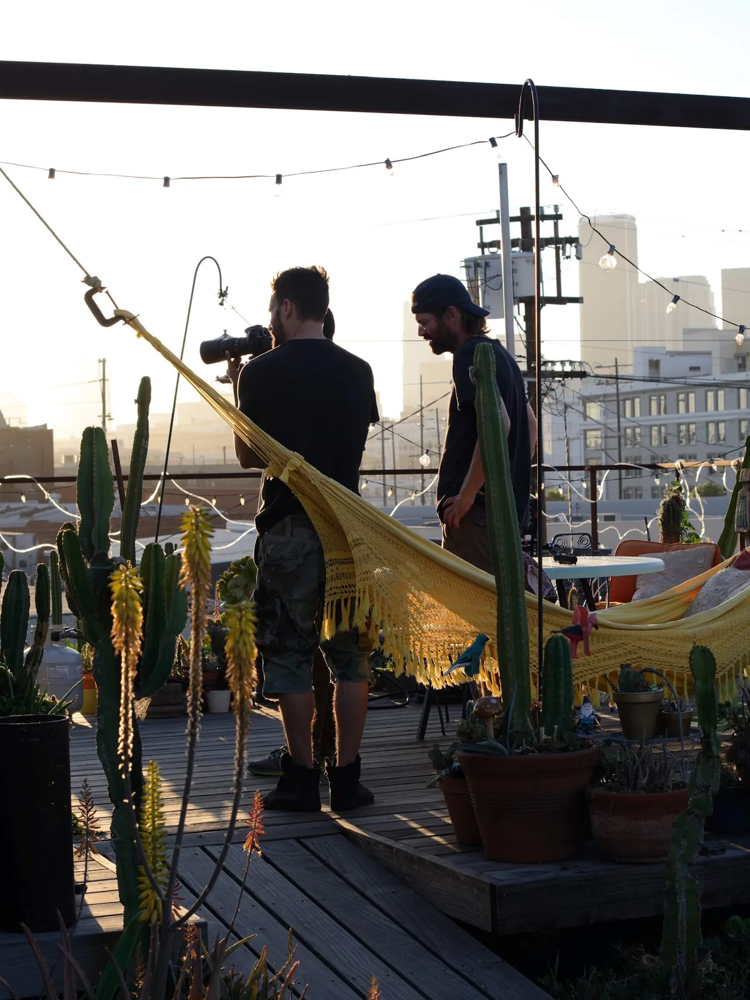

AboutÀ propos
We are a group of individuals, a collective of video directors, a collaboration of artists with a shared vision, a shared passion. We are Pixmakers.Nous sommes un groupe d’individus, un collectif de réalisateurs, une collaboration d’artistes qui partagent une vision et une passion. Nous sommes Pixmakers.
Founded by Mr Pinoux on a simple idea: a generation raised behind screens is a generation of pixel handlers. Hence the name — and hence the Factory, a workshop rather than an agency, where video and image are assembled pixel by pixel.Fondé par Mr Pinoux sur une idée simple : une génération qui a grandi derrière des écrans est une génération de fabricants de pixels. D’où le nom — et d’où la Factory, un atelier plutôt qu’une agence, où la vidéo et l’image se montent pixel par pixel.
We were born from a generation that grew up pushing pixels — so we never stopped treating them as the raw material. A frame is a grid of decisions. Zoom in far enough and every image we have ever made falls apart into squares, and we like it there: at the point where the picture admits what it is made of.Nous venons d’une génération qui a grandi à pousser des pixels — nous n’avons jamais cessé de les traiter comme la matière première. Une image est une grille de décisions. Zoomez assez loin et tout ce que nous avons fabriqué se défait en carrés, et c’est là que nous aimons être : au point où l’image avoue de quoi elle est faite.
That is the whole job, really. Put the squares in an order nobody else would think of, then stand back until they turn into something you feel.C’est tout le métier, au fond. Ranger les carrés dans un ordre auquel personne d’autre n’aurait pensé, puis reculer jusqu’à ce qu’ils deviennent quelque chose qui vous touche.
